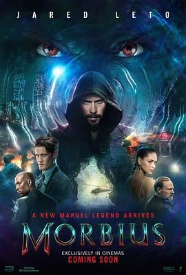

5.8
暗夜博士：莫比亚斯
Morbius
2022
美国
评分 5.8
导演:
丹尼尔·伊斯皮诺萨
演员:
杰瑞德·莱托 / 马特·史密斯 / 阿德里娅·阿霍纳 / 杰瑞德·哈里斯 / 泰瑞斯·吉布森
类型:
动作,惊悚,科幻
剧情简介
天才血液病学家麦可·莫比亚斯（杰瑞德·莱托 饰）一直被罕见血液病折磨，他为了救自己也为了救千千万万同样受苦的人，不惜挑战极限，奔赴南极蝙蝠洞、解析血浆抗体，终于获得了奇迹般的改造能力。起初，他觉得自己人生翻盘、如蜕茧成蝶：极速再生、敏锐感知、异于常人的力量。但好景不长，在那片科学与黑暗交汇的边界，他发现自己不仅解救了疾病，也唤醒了深藏的“兽血”本能。他看见自己镜中闪烁的利齿、夜间追踪猎物的影子、内心某处逐渐被欲望吞噬。与此同时，他的童年好友米洛（马特·史密斯 饰）亦走上类似改造之路，兄弟两人的命运从救赎走向较量。联邦探员史特劳德（泰瑞斯·吉布森 饰）一路追踪蛛蛛网下的暴动线索，迫使莫比亚斯不得不面对自我与法律的冲突。影片在纽约黑夜的霓虹下、古老实验室的幽暗墙壁中，快速切换在吸血的冲动与救人的初衷之间。镜头里麦可握紧试管、听见血液奔流声，他闭眼一跃，融入夜色——这一刻，他不只是一个科学家，也是游走于阴影的“夜行者”。虽然影片部署了典型的超级英雄起源节奏，但它的黑暗色调和吸血设定让人感觉故事“有点不一样”。真正的亮点在于：当你预期一个穿紧身衣的救世主，他却可能是一枚带血痕的子弹；当你相信科学的掌控，他却在失控边缘翻转。麦可的每一次低沉喘息、每一次鏡头定格在蝙蝠翼影下，都在提醒观众——“英雄”也可以凝视深渊。如果你偏好那种夜色中械斗与血液交织、暗影与力量互为镜像的视觉体验，这部电影将带你进入一个既熟悉又偏离常轨的“超级反英雄”世界。